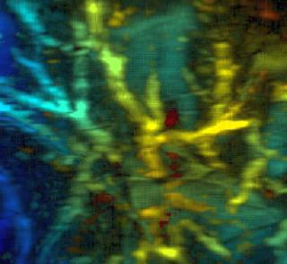
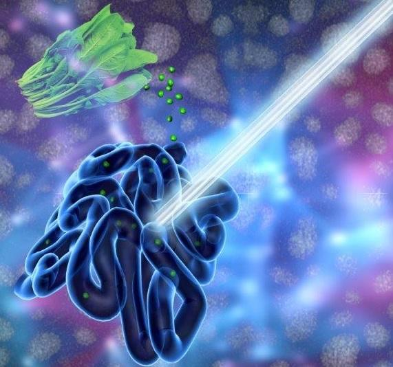
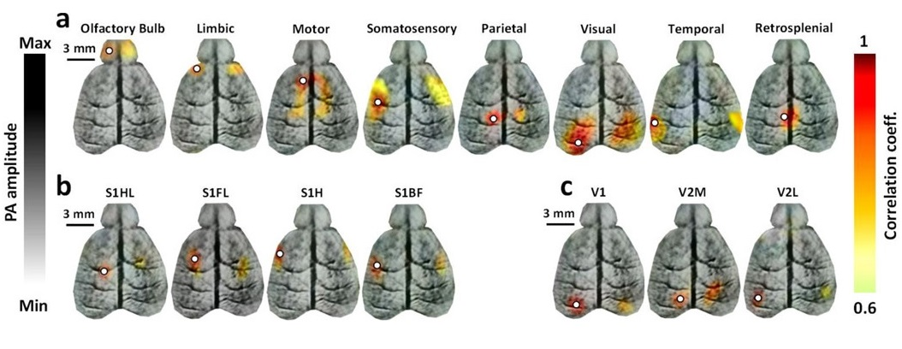
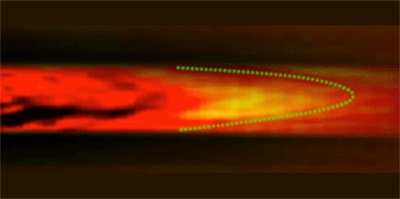
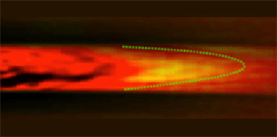
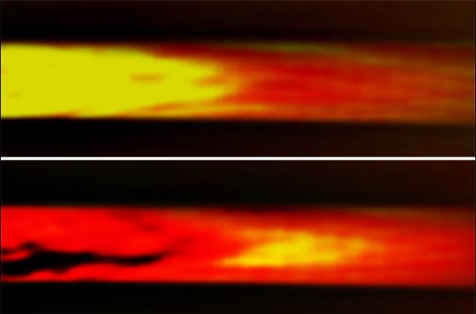
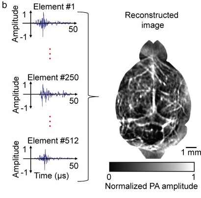

New laser diodes promise compact Photoacoustic platforms
2017
Optics.org
An international group led by Jun Xia of the University at Buffalo has now demonstrated a possible route to overcoming these hurdles and assisting the technique's clinical acceptance, through the use of a compact and high-power laser in photoacoustic computed tomography (PACT). The technique was applied to the in vivo study of mice and human tissues, in work published by Biomedical Optics Express.
Read more...Veggie juice that illuminates the Gut
2016
EurekAlert
BUFFALO, N.Y. -- The pigment that gives spinach and other plants their verdant color may improve doctors' ability to examine the human gastrointestinal tract. That's according to a study, published today (July 11, 2016) in the journal Advanced Materials, which describes how chlorophyll-based nanoparticles suspended in liquid are an effective imaging agent for the gut.
Read more...Photoacoustics enables high-res functional connectivity imaging of the mouse brain
2014
BioOptics World
Using optical excitation and acoustic detection, Wahington University researches have developed a functional connectivity photoacoustic tomography (fcPAT) system, which, for the first time, allows noninvasive imaging of resting-state functional connectivity (RSFC) in the mouse brain, with a large field of view and a high spatial resolution. Research associate Mohammad Avanaki, Ph.D., describes RSFC as one of the most exciting discoveries in neuroimaging: It aims to identify low-frequency, spontaneous cerebral hemodynamic fluctuations, which are highly correlated with the local neuronal activity.
Read more...Imaging technology in mice enhances human brain research

2014
SPIE Newsroom
One of many approaches to studying neurological function involves imaging the brain's functional connectivity, an observational analysis of neuronal activity in different parts of the brain. Recent research suggests that fluctuations in the activity of separate groups of neurons are interactively correlated, although they do not affect one another's activity directly. Resting-state functional connectivity (RSFC) imaging is one technique that is emerging to identify low-frequency, spontaneous cerebral fluctuations in hemodynamics—such as blood oxygenation and total hemoglobin concentration—that are associated with these functional connections.
Read more...Going with the Flow
2013
Physics Synopsis
Measuring local blood flow inside living creatures provides insight into both normal functions and diseases. Ultrasound can probe deep within tissues by using the Doppler shift of the sound waves’ frequency to detect the motion of blood cells. But this effect is unmeasurable for blood moving slower than about ten millimeters per second. In Physical Review Letters, Lidai Wang and his colleagues at Washington University, Missouri, demonstrate that ultrasonic waves can instead be used to heat a small volume of blood, thereby “tagging” it. The motion of this tagged blood is then tracked by a light-based technique. In a test setup, they measured speeds as low as a quarter of a millimeter per second.
Read more..Thermal technique improves blood-flow measurements
2013
Physics World
A new method for imaging the flow of blood has been developed by researchers in the US. By using ultrasound to thermally tag blood, along with photoacoustics to image the resulting heat flow, the new technique is considerably more sensitive than the conventional Doppler ultrasound method that is currently used. While presently at the in vitro testing stage, this technique might have a variety of clinical applications, especially in medical diagnosis.
Read more...ScienceShot: A Window Into Your Veins
2013
Science
Now there’s a better way to spy on the blood in your veins. Doctors already have two techniques to monitor obstructions in blood vessels, but they both have limitations. The first, Doppler ultrasound imaging, involves irradiating tissue with ultrasound waves; the waves that reflect off flowing blood acquire a Doppler shift, which can be used to pick out blood and calculate its speed. Doppler can't distinguish flowing blood from surrounding tissue unless it's moving quickly, however, which makes minor blood vessels invisible..
Read more...Noninvasive photoacoustic computed tomography of mouse brain metabolism in vivo
2013
F1000Prime Article Recommendations
Optical imaging is beginning to come to age. It has long held great promise as a tool for interrogating surface tissues because of the flexibility in selection of fluorophores. While some information has long been available with the use of a signal from intrinsic contrast with hemoglobin or cytochromes, applications have been limited either to those demanding only very limited spatial information or where the tissue can be exposed.
Read more...